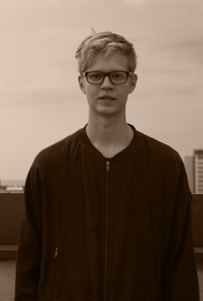

 SoundCloud
SoundCloudToolicky is a Helsinki-based DJ who is recognized for intensive deep house sets as well as the FLAT club which he has been running together with his friend for over two years. He has also performed at Flow Festival and many underground events in Finland.
Skillfully crafted mixture of 90s deep house and techno together with modern new sounds creates the unique and emotional atmosphere for his sets and keeps people hooked right from the beginning.